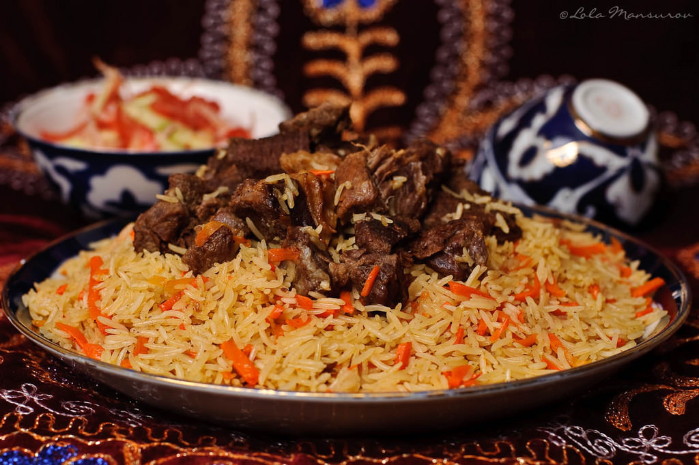
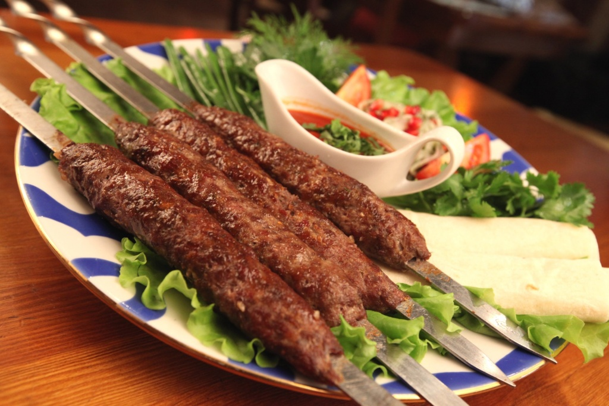
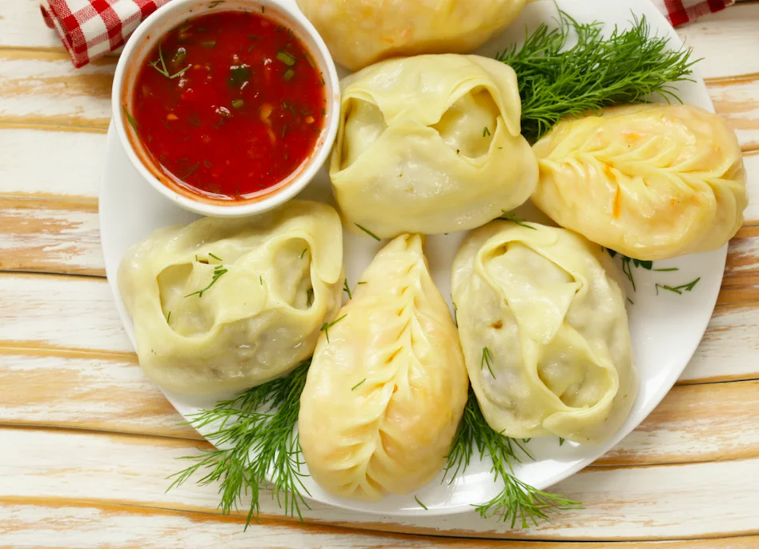

Palov
Palov - o'zbek milliy taomi bo'lib, guruch va go'shtdan tayyorlanadi.
Shashlik
Shashlik - go'sht bo'laklari yog' bilan marinadlanib, grilda pishiriladi.
Manti
Manti - ichida go'sht va sabzavotlar bo'lgan xamir ovqat.
Palov - o'zbek milliy taomi bo'lib, guruch va go'shtdan tayyorlanadi.
Shashlik - go'sht bo'laklari yog' bilan marinadlanib, grilda pishiriladi.
Manti - ichida go'sht va sabzavotlar bo'lgan xamir ovqat.